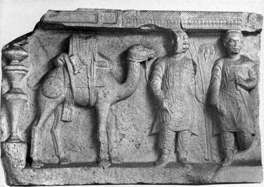

Res Gestae Divi Augusti (The Deeds of the Divine Augustus) also known as Index rerum gestarum, are a report written by the Roman emperor Augustus before his death and concerning the accomplishments he obtained during his long political career. The text has arrived engraved in Latin and in Greek translation on the walls of the temple of Augustus and of the goddess Roma (Monumentum Ancyranum) in Ancyra, today's Ankara in Turkey.
The text consists of a short introduction, 35 body paragraphs, and a posthumous addendum. These paragraphs are conventionally grouped in four sections: political career, public benefactions, military accomplishments and a political statement.
This storymap will focus on the third section, highlighting the explorations, conquests and diplomatic achievements of Augustus outside the borders of the Roman Empire.
Classis mea per Oceanum ab ostio Rheni ad solis orientis regionem usque ad fines Cimbrorum navigavit, quo neque terra neque mari quisquam Romanus ante id tempus adit, Cimbrique et Charydes et Semnones et eiusdem tractus alli Germanorum populi per legatos amicitiam mean et populi Romani petierunt. (RG, 26)
I sailed my ships on the ocean from the mouth of the Rhine to the east region up to the borders of the Cimbri, where no Roman had gone before that time by land or sea, and the Cimbri and the Charydes and the Semnones and the other Germans of the same territory sought by envoys the friendship of me and of the Roman people. (RG, 26)
Omnium provinciarum populi Romani], quibus finitimae fuerunt gentes quae non p[arerent imperio nos]tro, fines auxi. Gallias et Hispanias provincias, i[tem Germaniam qua inclu]dit Oceanus a Gadibus ad ostium Albis flumin[is pacavi. (RG, 26)
Pannoniorum gentes, quas ante me principem populi Romani exercitus numquam adit, devictas per Ti. Neronem, qui tum erat privignus et legatus meus, imperio populi Romani s[ubie]ci protulique fines Illyrici ad ripam fluminis Danuvi. (RG, 30)
I extended the borders of all the provinces of the Roman people which neighbored nations not subject to our rule. I restored peace to the provinces of Gaul and Spain, likewise Germany, which includes the ocean from Cadiz to the mouth of the river Elbe. (RG, 26)
As for the tribes of the Pannonians, before my principate no army of the Roman people had entered their land. When they were conquered through Tiberius Nero, who was then my step-son and emissary, I subjected them to the rule of the Roman people and extended the borders of Illyricum to the shores of the river Danube. (RG, 30)
Meo iussu et auspicio ducti sunt duo exercitus eodem fere tempore in Aethiopiam et in Arabiam, quae appellatur Eudaemon, maximaeque hostium gentis utriusque copiae caesae sunt in acie et complura oppida capta. In Aethiopiam usque ad oppidum Nabata perventum est, cui proxima est Meroe. In Arabiam usque in fines Sabaeorum processit exercitus ad oppidum Mariba. (RG, 26)
Aegyptum imperio populi Romani adieci. (RG, 27)

By my order and auspices two armies were led at about the same time into Ethiopia and into that part of Arabia which is called Happy, and the troops of each nation of enemies were slaughtered in battle and many towns captured. They penetrated into Ethiopia all the way to the town Nabata, which is near to Meroe; and into Arabia all the way to the border of the Sabaei, advancing to the town Mariba. (RG, 26)
I added Egypt to the rule of the Roman people. (RG, 27)
Signa militaria complura per alios duces amissa devictis hostibus reciperavi ex Hispania et Gallia et a Dalmateis. Parthos trium exercitum Romanorum spolia et signa reddere mihi supplicesque amicitiam populi Romani petere coegi. Ea autem si[gn]a in penetrali, quod est in templo Martis Ultoris, reposui. (RG, 29)
Ad me ex In[dia regum legationes saepe missae sunt nunquam visae ante id tempus apud quemquam Romanorum ducem. Nostram amicitiam petierunt per legatos Bastarnae Scythaeque et Sarmatarum qui sunt citra flumen Tanaim et ultra reges. Albanorumque rex et Hiberorum et Medorum. (RG, 31)
I recovered from Spain, Gaul, and Dalmatia the many military standards lost through other leaders, after defeating te enemies. I compelled the Parthians to return to me the spoils and standards of three Roman armies, and as suppliants to seek the friendship of the Roman people. Furthermore I placed those standards in the sanctuary of the temple of Mars Ultor. (RG, 29)
Emissaries from the Indian kings were often sent to me, which had not been seen before that time by any Roman leader. The Bastarnae, the Scythians, and the Sarmatians, who are on this side of the river Don and the kings further away, an the kings of the Albanians, of the Iberians, and of the Medes, sought our friendship through emissaries. (RG, 31)